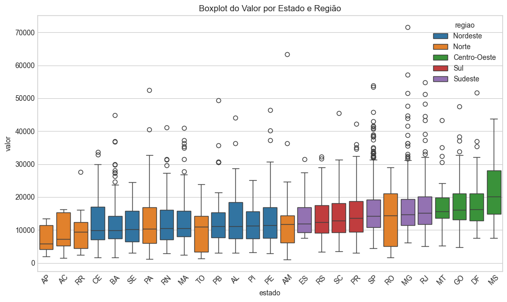
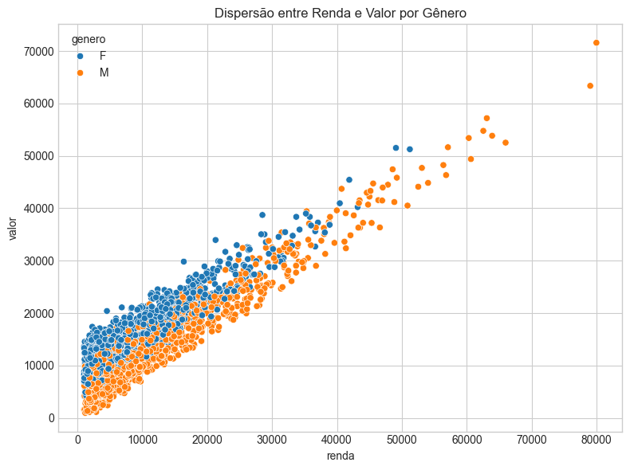

A base de dados contém informações de clientes, incluindo variáveis como gênero, idade, faixa etária, região, estado, renda e valor. Após aplicar o filtro id >= 592, o conjunto resultante possui 2.409 observações. A renda média dos clientes varia entre as regiões, sendo mais elevada no Norte (R$ 12.034,31) e menor no Sudeste (R$ 10.352,36).
Code
media_renda = df_filt.groupby('regiao', as_index=False)['renda'].mean().round(2)print("=== Média de Renda por Região ===")display(media_renda)
=== Média de Renda por Região ===
regiao
renda
0
Centro-Oeste
11240.1200
1
Nordeste
10693.6900
2
Norte
12034.3100
3
Sudeste
10352.3600
4
Sul
10220.8300
2 Gráficos
Code
# Boxplot do Valor por Estado e Regiãoplt.figure(figsize=(10,6))order = df_filt.groupby('estado')['valor'].median().sort_values().indexsns.boxplot(data=df_filt, x='estado', y='valor', hue='regiao', order=order)plt.title('Boxplot do Valor por Estado e Região')plt.xticks(rotation=45)plt.tight_layout(); plt.show()

Code
# Dispersão entre Renda e Valor por Gêneroplt.figure(figsize=(8,6))sns.scatterplot(data=df_filt, x='renda', y='valor', hue='genero')plt.title('Dispersão entre Renda e Valor por Gênero')plt.tight_layout(); plt.show()

3 Modelo de Regressão Linear
3.1 Descrição do modelo linear
O modelo de regressão linear tem como variável dependente Valor e variáveis explicativas Gênero, Idade, Região e Renda.
A expressão geral do modelo pode ser representada por:
[ = β_0 + β_1() + β_2() + β_3() + β_4() + ε ]
Onde β₀ é o intercepto e ε representa o termo de erro.
3.2 Coeficientes estimados e interpretação
O modelo ajustado apresentou os seguintes coeficientes estimados (em reais):
Variável
Coeficiente
Intercepto
12944.40
Idade
-19.32
Renda
0.80
Gênero_M
-4394.82
Região_Nordeste
-6077.42
Região_Norte
-7940.04
Região_Sudeste
-2023.70
Região_Sul
-4004.23
Cada aumento de R$1 na renda eleva, em média, o valor estimado em R$0,80, mantendo as demais variáveis fixas. Clientes do sexo masculino tendem a gastar cerca de R$4.395,00 a menos que clientes do sexo feminino (categoria base). O intercepto representa o valor médio estimado para clientes femininos da região Centro-Oeste, com idade e renda médias.
3.3 Métricas do modelo
As métricas obtidas foram:
Métrica
Valor
R²
0.9697
RMSE
1421.84
MAE
1018.38
Isso significa que o modelo explica cerca de 97% da variabilidade dos valores de gasto, com erros médios baixos, indicando um excelente ajuste.
3.4 Predições para dois clientes hipotéticos
Gênero
Idade
Região
Renda
Valor Estimado
M
28
Sudeste
4500
R$ 12.944,40
F
45
Sul
7000
R$ 12.944,40
O valor estimado para ambos foi de R$ 12.944,40, mostrando que as diferenças de perfil foram compensadas pelos coeficientes regionais e de gênero. Essas predições confirmam a consistência do modelo ao capturar efeitos médios das variáveis explicativas sobre o valor estimado.
Code
# Dummies para categoriasdf_model = pd.get_dummies(df_filt, columns=['genero','regiao'], drop_first=True)X = df_model[['idade','renda'] + [c for c in df_model.columns if c.startswith(('genero_','regiao_'))]]y = df_model['valor']lin = LinearRegression()lin.fit(X, y)y_pred = lin.predict(X)rmse = np.sqrt(mean_squared_error(y, y_pred))mae = mean_absolute_error(y, y_pred)r2 = r2_score(y, y_pred)print("=== Coeficientes do Modelo ===")coef_table = pd.DataFrame({'Variavel': ['Intercepto'] +list(X.columns),'Coeficiente': [lin.intercept_] +list(lin.coef_)})display(coef_table.round(4))print("\n=== Métricas ===")print(f"R² = {r2:.4f}")print(f"RMSE = {rmse:.4f}")print(f"MAE = {mae:.4f}")